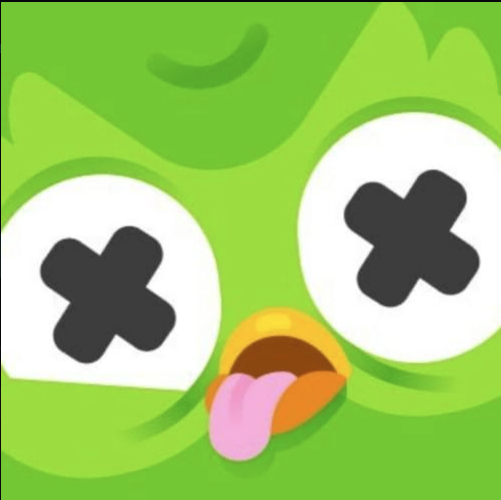
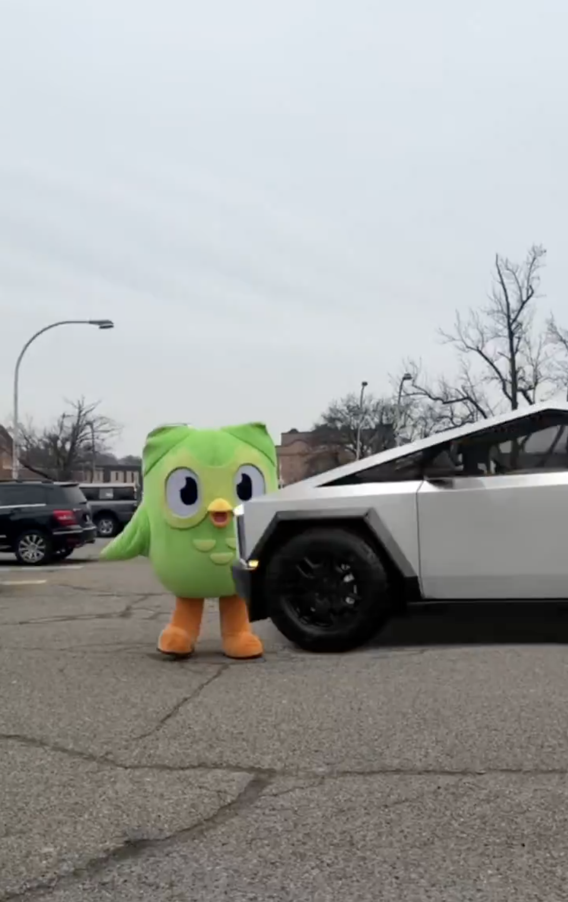
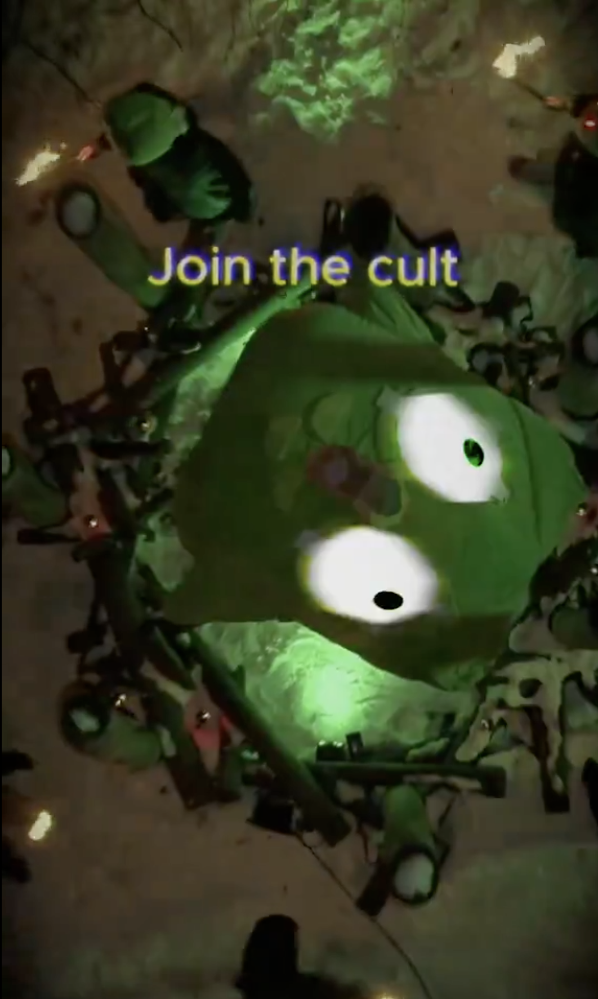

Duo Introduction
Duo (Contract Address: KFTSxPQxDV1wGjEvzKHWD7mG6e9TsMVq4eF4mQppump) is the abbreviation for Duolingo, a Web2 multi-language learning platform that is publicly listed worldwide. The narrative begins with the death of Duolingo’s mascot, the owl:
Duolingo’s mascot owl was killed by being hit by a Cybertruck, a meme related to Elon Musk. (Source)
Duolingo announced the death of its mascot "Duo the Owl" on February 11, 2025, and released a video on February 12 showing Duo being hit by a Tesla Cybertruck, exploding and "rising" in an animated form, even passing through a "hell gate". The video was described as funny and exaggerated, designed to attract attention and promote the brand. The video came with a warning: "The following images may cause distress to the Owl", and called on users to provide clues to the "driver" on social media as part of a marketing stunt.


Duo’s revival is a spiritual one, as Duo, during its lifetime, taught countless people to learn the languages they wanted. It lives on forever in the hearts of young users who learned languages through Duolingo, embodying a spirit of MEME culture dissemination. The following outlines Duo as a pure meme coin and its trends:
The official X Twitter account posted with images explicitly referencing the narrative of the Duo owl’s death. PS: The last MEME coin that X’s official account reposted with images and went viral was the hippo.
Duo is backed by all events related to Duolingo. Duolingo has significant influence in Web2, which translates to Web3, raising investors’ psychological expectations.
Duolingo’s official Twitter recently hinted at cryptocurrency and "OKX", suggesting a potential listing on OKX as the market warms up.
Exchanges like Bitget and HTX have recently posted tweets with terms like “Duolingo” and “#DUO,” indicating they’ve taken notice.
The meme of the Owl being killed and revived has strong virality and cultural foundation, with a high likelihood of further fermentation. Join the Duo cult!
